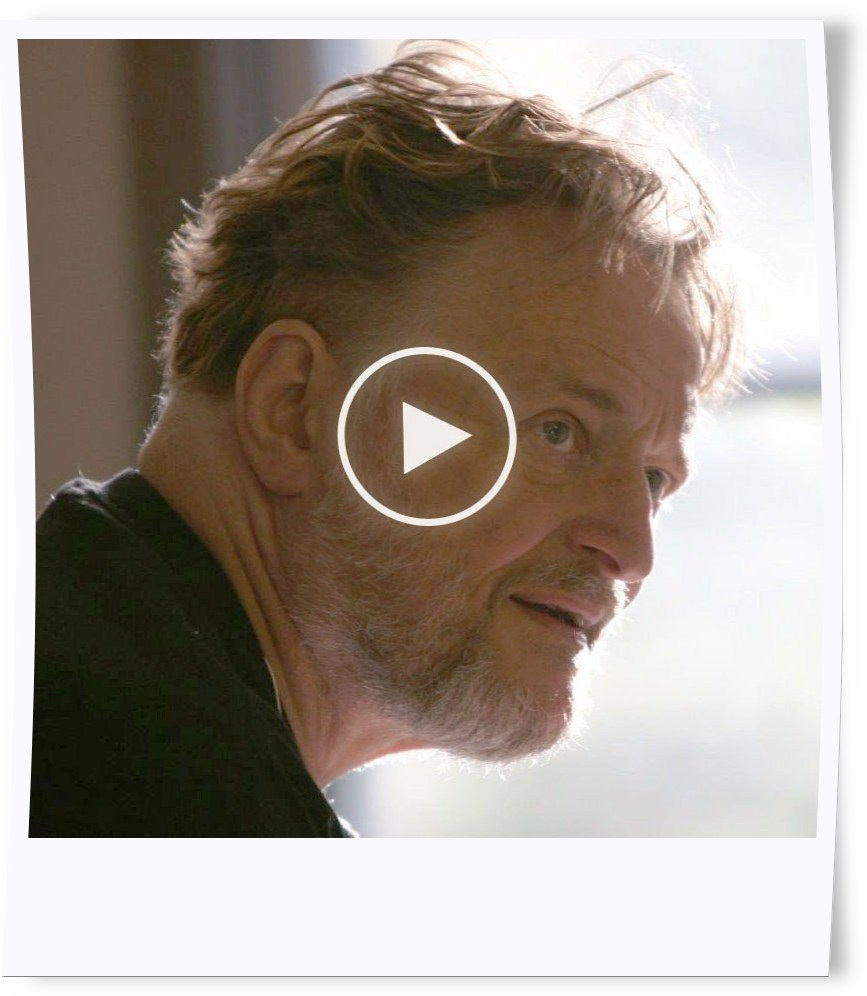

Patterns
Bestimmte Pattern/Muster, Anordnung von lebenden Zellen, haben besondere Eigenschaften. So gibt es statische Muster, die sich (ohne Einfluss von Aussen) nicht verändern. Dann gibt es oszillierende Muster, die nach einer definierten Anzahl von Nachfolgegenerationen wieder genau dem Anfangszustand entsprechen. Ausserdem wurden Raumschiff Muster entdeckt, die nach n Zyklen wieder dem verschobenen Urspungsmuster gleichen.
infoBeim Hoovern über das Pattern wird es animiert nach den Conway Rules B3/S23
Weitere Infos

In Video erklärt John Conway die Entdeckung vom GameOfLife sowie die möglichen Anwendungen.